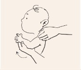
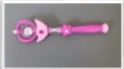

이른둥이
이른둥이의 발달
이른둥이의 발달을 잘 지켜보세요
-
1. 발달일기쓰기
발달 이정표를 보고 매달 발달 영역에서 성취하는 것들을 기록해 두세요. 평소에 작성해 놓은 발달 일기는 소아청소년과나
정신건강의학과, 영유아 발달 센터 등을 방문했을 때 중요한 정보를 제공할 수 있습니다. -
2.우리 아기, 얼마나 할 수 있나요? - 연령별 발달 과정
연령별 발달 과정-연령, 운동, 적응, 언어, 사회적행동 테이블 연령 운동 적응 언어 사회적행동 ~4주 팔다리를 구부리고 있는다. 잡기 반사가 활발하다. 시야에 보이는 불빛에 얼굴을 고정한다. 목소리에 반응을 보인다. 사람의 얼굴을 선호한다. 1개월 엎어 놓으면 턱을 들고 머리를 좌우로 돌린다. 사람을 쳐다본다. 움직이는 물체를 따라본다. 미소 짓기 시작한다. 목소리에 반응하여 몸을 움찔거린다. 3개월 엎어 놓으면 두 팔을 펴서 받치며 머리와 가슴을 든다. 앉힌 자세에서 머리를 약간 가눈다. 물체를 보면 접근하지만 잡지는 못한다. 장난감을 보면 손을 움직인다. 양손을 몸의 가운데로 모은다. 음악소리에 귀를 기울인다.‘아’소리를 낸다. 사회적 반응 시간이 길어진다. 4개월 엎어 놓으면 머리와 가슴을 들어 머리가 수직인 자세가 된다. 다리를 펴고 있다. 바로 누운 자세에서 붙잡아 일으켜 앉히면 머리를 가눈다. 물체에 손을 뻗어서 잡고 입으로 가져간다. 크게 소리를 내어 웃는다. 먹을 것을 보면 좋아한다. 7개월 앉혀 놓으면 혼자 앉아 있는다. 배밀이 또는 네발로 긴다. 세우면 다리를 뻗어 몸을 지탱한다. 다른 손으로 물건을 옮겨 쥔다. 작은 물체를 보면 갈고리 모양으로 움켜쥔다. 세 음절 이상의 모음 소리를 낸다. 의미 없이 재잘거린다. 엄마를 더 좋아한다. 거울을 좋아한다. 상대의 감정 변화에 반응한다. 10개월 혼자 일어나 앉는다. 기어 다닌다. 붙잡고 일어선다. 가구 등을 붙잡고 걷는다. 엄지손가락과 집게손가락으로 물건을 쥔다. 반복되는 자음을 발음한다 (마마, 빠빠). 이름을 부르면 반응한다. 까꿍, 짝짜꿍, 바이바이 놀이를 한다. 12개월 혼자 일어선다.혼자 걷는다. 엄지와 집게손가락으로 알약 크기의 작은 물체를 집어 든다.달라고 하면 손에 쥐고 있던 물건을 손을 펴서 놓아준다. 엄마, 아빠 외에 다른 말을 몇 개 정도 말한다. 간단한 공놀이를 한다. 옷을 입힐 때 자세를 취한다.
하나 둘 하나 둘! 발달을 도와주는 이른둥이 운동법
-
1. 팔을 위로 올리기
아기가 바로 누운 자세에서 어깨가 올라가지 않도록 한 손으로 어깨를 고정하고 다른 손으로 아이의 손목을 잡고 팔꿈치가 쭉 펴진 상태에서 한 손을 머리 위로 올립니다.

-
2. 팔을 옆으로 벌린 자세에서 안으로 붙이기
아기가 바로 누운 자세에서 어깨가 올라가지 않도록 한 손으로 어깨를 고정하고 다른 손으로 아이의 손목을 잡고 반대쪽 팔 쪽으로 몸통을 가로질러 팔을 구부려줍니다.

-
3. 팔을 회전시키기
아이가 바로 누운 자세에서 몸통으로부터 팔을 옆으로 90도 정도 벌리고 팔꿈치를 구부린 후 아이의 손목을 잡고 위로 올렸다가 아래로 내려줍니다.
-
4. 팔을 옆으로 벌리기
아이가 바로 누운 자세에서 어깨가 올라가지 않도록 한 손으로 어깨를 고정하고 다른 손으로 아이의 손목을 잡고 몸통으로부터 옆쪽으로 멀리 팔을 벌려줍니다.
-
5. 다리 구부리기
아이가 바로 누운 자세에서 한 손으로 아이의 엉덩이 위쪽을 고정해 주며 다른 손으로는 무릎 밑을 잡아줍니다. 아이의 다리를 위로 올려줍니다.
-
6. 다리를 옆으로 벌리기와 오므리기
아이가 누운 자세에서 한 손으로 아이의 골반을 고정하고 다른 손으로는 발뒤꿈치를 잡습니다. 아이의 다리를 옆으로 벌리고 그런 다음 아이의 다리를 반대편 다리에 붙여줍니다.
-
7. 골반과 무릎을 구부리고 다리를 회전시키기
아이가 누운 자세에서 아이의 고관절과 무릎관절을 90도 정도 구부립니다. 한 손으로 아이의 무릎 위 부분을 고정하고 다른 손으로는 아이의 발뒤꿈치를 잡아줍니다. 무릎이 안으로 돌아가도록 발뒤꿈치를 바깥쪽으로, 그런 다음 안쪽으로 돌려줍니다.
이른둥이에서 생길 수 있는 인지/행동/정서 문제
이른둥이 장기추적연구 중에는 인지 저하, 주의력 문제, 자폐스펙트럼 및 우울에 대한 연구 중 인지 저하에 대한 보고가 많은데, 만삭아들에 비해 이른둥이들이 평균 IQ가 12.9점 더 낮고, ADHD(주의력결핍 과잉행동장애) 발병 위험은 2~4배 높은 것으로 알려져 있습니다. 또한 극소저출생체중아에서 평균 5세에 자폐스펙트럼으로 진단된 경우가 더 흔했습니다.
자폐스펙트럼이란 사회적 의사소통 및 상호작용의 결함으로 사회적, 감정적 상호교환성 저하, 비언어적 의사소통과 제한적/반복적 행동 및 관심사를 특징으로 하는데, 생후 18개월부터 조기 선별 검사를 통해 조기개입 치료를 한다면 효과를 기대해볼 수 있습니다.
따라서 퇴원 후 추적관찰 시기에 맞추어 진료가 꼭 필요합니다.
놀면서 배워요
-
1. 아기에게 놀이란?
놀이는 육아의 중요한 부분이며, 부모-자식 관계 형성의 좋은 방법입니다. 아기는 놀이를 통해 의사소통과 상호작용을 배워 나가고 이는 아기의 뇌 발달에 중요합니다. 아기에게 부모가 아기와의 상호작용을 즐거워한다는 것을 알려줌으로써 안정감을 느끼도록 해주며 아기는 이를 토대로 다른 사람들과의 관계도 맺어갈 수 있습니다.
교정 연령으로 18개월까지는 TV, 컴퓨터, 디지털 장비 등 미디어에 노출되지 않도록 하는 것이 좋습니다. 이 시기까지 아기들은 부모와 상호 작용하면서 창의적인 놀이를 통해 인지, 언어, 운동, 사회 정서적 능력을 발달시켜야 하기 때문입니다. 신경 발달 촉진을 위해, 세계 보건 기구(WHO)는 생후 1세 이전의 아기는 엎드려서 하루 30분 이상 (터미 타임, tummy time) 보내는 것을 포함하여 하루에도 수 차례 활동적인 시간을 보내는 것을 권장하고, 유아차, 유아 의자, 부모의 등에 업혀 있는 등 위치가 고정되는 비활동적인 시간을 하루 1시간 이내로 제한하도록 권장합니다. -
2. 연령별 추천 놀이
아기가 바로 누운 자세에서 어깨가 올라가지 않도록 한 손으로 어깨를 고정하고 다른 손으로 아이의 손목을 잡고 반대쪽 팔 쪽으로 몸통을 가로질러 팔을 구부려줍니다.
연령별 추천 놀이-연령, 내용, 발달놀이도구 테이블 연령 내용 발달놀이도구 신생아 - 신체적인 접촉(쓰다듬기, 안아주기, 마사지 등)을 많이합니다.
- 아기가 엄마의 얼굴을 가까이서 볼 수 있도록 합니다.
- 모빌을 침대 옆에 붙여 둡니다.
- 밝은 색의 장난감(딸랑이 등)을 골라 움직여 아기의 눈이 장난감을 따라가도록 합니다.
- 아기의 손에 다른 촉감의 물건 혹은 천을 두어 여러 종류의 촉감을 느끼도록 합니다. (헝겊책, 촉감인형 등)
1~3개월 - 아기에게 말을 하고, 읽어주고, 노래를 들려줍니다.
- 모빌(흑백모빌->색깔모빌, 밝고 대조색으로 되어 있는 모빌)을 달아주며 쳐다보게 합니다.
- 아기가 하는 것을 따라 하면서 소리와 표현에 반응해 줍니다.
- 아기가 자신의 손가락을 빨아도 괜찮으니 아기가 스스로 달래는 법을 배우도록 도와줍니다.
- 터미 타임과 함께 아기의 배가 바닥을 향하도록 엎어 놓음으로써 목과 등 근육을 강화시킵니다.
- 바닥에 대고 눕혀서 아기로 하여금 발을 움직이고 다리를 차도록 만듭니다 (아기 체육관 활용)
- 아기들이 깨물고 노는 장난감이 도움이 됩니다.
4~6개월 - 손을 가운데로 모을 수 있게 운동합니다.
- 초보적인 대상영속성 기술을 위해 까꿍놀이가 도움이 됩니다.
- 딸랑이나 화려한 그림이 있는 장난감 등을 활용하여 놀아줍니다.
- 장난감에 손을 뻗거나 발로 찰 수 있도록 장난감을 아기 근처에 둡니다.
- 장난감이나 딸랑이를 잡을 수 있도록 도와줍니다.
- 음악이 나오는 기계나 종, 뮤직박스나 소리나는 장난감으로 다양한 소리를 들려주세요
- 딸랑이를 아기 시선의 약간 바깥에서 흔들어 아기가 고개를 소리나는 쪽으로 돌리게 해보세요.
7~9개월 - 흉내 내기를 유도하고 특히 까꿍, 짝짜꿍, 바이바이, 곤지곤지, 잼잼 놀이를 합니다.
- 가려진 물건을 탐색하는 놀이를 하세요.
- 집에서 쉽게 찾을 수 있는 플라스틱 용기나 플라스틱 숟가락도 장난감으로 활용할 수 있습니다.
- 아기를 무릎에 앉히고 책을 읽어주세요. 적절하다면 그림에 어울리는 소리를 내세요. 예) 소 그림이라면 ‘음매’, 고양이 그림이라면 ‘야옹’ 자동차 그림이라면 ‘빵빵’
- 오뚝이, 다양한 크기와 색깔의 블록을 이용한 놀이가 도움이 됩니다.
- 만약 아기가 장난감을 바닥에 떨어뜨리면 집어서 돌려줍니다. 이는 원인과 결과를 배우는 데 도움이 됩니다.

10~12개월 - 엄지와 검지로 작은 물건을 잡을 수 있게 되고 흔들기, 치기, 던지기 등 다양한 방법으로 사물을 탐색하기도 하며 물건을 용기에 넣을 수 있습니다.
- 아이가 보고 있는 것을 구체적으로 설명해 줍니다.
- 머리를 젓는 ‘아니오’ 또는 ‘엄마’ 와 ‘아빠’ 같은 단어 및 ‘어-오’ 같은 감탄사를 배웁니다.
- 치면서 놀 수 있는 장난감. 예) 실로폰, 드럼, 페트병
- 밀고 노는 장난감. 예) 공, 큰 플라스틱 자동차
- 회전 목마, 튀어나오는 장난감, 도깨비 상자, 누르는 버튼이나 돌리는 손잡이가 있는 장난감이 도움이 됩니다.
